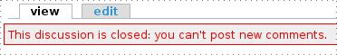

Spam již dávno není jen doménou e-mailu, ale také webových serverů, které umožňují uživatelům vkládat jakýkoliv obsah. Spamové záznamy zvláště v komentářích se objevují dnes a denně a není výjimkou server, na kterém najdete tisíce spamů. Spam se nevyhýbá ani serverům, které používají Drupal (hlavně osobní blogy), zkusíme se podívat na to, jak v Drupalu se spamem bojovat.
Spam ve většině případů na servery vkládají roboti, kteří procházejí všechny stránky a hledají vhodné formuláře, do kterých poté vyplní text do <textarea> a nasimulují stisk všech tlačítek. Tím se dostáváme k možnostem ochrany proti spamu:
Toto nejsou všechny možnosti, jsou to však ty nejpoužívanější.
Drupal nabízí díky svému modulárnímu systému a API několik možností ochrany proti spamu. V současné době můžete použít Bayes a DNS databáze, několik forem Turingova testu a hodnotící filtr. V příštím díle seriálu se budeme zabývat turingovy testy.
Pokračování seriálu o ochraně proti spamu v Drupalu. V tomto díle se budeme zabývat turingovými testy, konkrétně Captchou.
Tuto ochranu pro Drupal nabízí modul Captcha společně s modulem Textimage. První je dostupný pro Drupal 4.6 i 4.7, druhý myslím pouze pro 4.7. Pro komentářovou Captchu ve 4.6 však potřebujete patch pro modul comment (existuje více implementací patche, tento konkrétní jsem nezkoušel, doporučuji všem přechod na 4.7). Naopak nová Captcha již vyžaduje modul Textimage (který se nyní stará o generování obrázků), bez něj umožňuje pouze výpočetní test.
Captcha pro Drupal 4.7 nabízí mnoho možností, do kterých formulářů umístit ochranný test:
Všechny tyto možnosti můžete dále rozlišit pro jednotlivé uživatelské role (anonymní a přihlášený uživatel).
Stáhněte moduly Captcha a Textimage a rozbalte je do adresáře modules ve Vaší instalaci Drupalu (Nebo je rozbalte u sebe a nahrajte na místo přes FTP). Oba moduly by již měly obsahovat soubor s příponou .install. Nyní se podívejte na stránku http://www.vas-drupal.com/admin/modules a oba moduly aktivujte.
Oba moduly je potřeba nakonfigurovat. Na stránce http://www.vas-drupal.com/admin/settings/textimage naleznete nastavení modulu Textimage. Ten pro svou správnou funkci vyžaduje nějaký TrueType font. O tom Vás informuje v poslední záložce: Number of fonts found: 1. Pokud žádný nemáte, máte dvě možnosti:
Po nahrání fontů by měl Textimage najít alespoň jeden font. Další nastavení nemusíte řešit, pouze, pokud máte chuť.
Podívejte se na stránku http://www.vas-drupal.com/admin/settings/captcha. Důležitým nastavením je Type of captcha to use. Pokud vyberete textimage a máte správně nakonfigurovaný předchozí modul, captcha bude zobrazovat obrázek. Pokud vyberete captcha, zobrazí se jednoduchý výpočetní test typu "Kolik je 7+7?".
Dalším nastavením jsou formuláře, ve kterých se má Captcha použít. My chceme chránit pouze komentáře a registraci uživatele, vybereme tedy User Registration Form a Comment Form v roli pro anonymní uživatele (přihlášení uživatelé již pro nás většinou nejsou nebezpeční, protoze museli projít minimálně jedním turingovým testem).
Nakonec se podívejte na adresu http://www.vas-drupal.com/admin/access, kde nastavte pro všechny potřebné role u modulu Textimage hodnotu access textimages (Typicky to budou všechny role, které v systému máte).
Po uložení nastavení byste měli mít oba formuláře chráněny jedním z Captcha testů. Pokud máte český web (což je pravděpodobné), můžete si všechny veřejné hlášení modulu přeložit v nastavení lokalizace.
V příštím díle seriálu se podíváme na Bayesovské databáze a DNS blacklisty.
Dnešní díl seriálu bude pojednávat o Bayes databázích a DNS blacklistech pro odchytávání spamu v Drupalu.
Modul spam je již druhou verzí sama sebe, jeho autorem je Jeremy Andrews z webu kerneltrap.org. Je dostupný na adrese http://www.kerneltrap.org/jeremy/drupal/spam/, z originální stránky modulu na Drupal.org vede pouze odkaz.
Tento modul si udržuje vlastní Bayes databázi spamů a na její základě spamy hodnotí komentáře a automaticky je schovává v případě spamu. Součástí detekce je i detekce URL v komentáři, které jsou pak porovnávány s online DNS blacklistem SURBL.
Stáhněte modul pro Vaši verzi Drupalu a dle vzoru Captcha ho umístěte do adresáře modules. Po aktivaci modulu v záložce modules se vrhneme na nastavení.
Modul má k dispozici 2 rozhraní pro své nastavení. První najdete na adrese http://www.vas-drupal.com/admin/spam, druhé na http://www.vas-drupal.com/admin/settings/spam. To první slouží k zobrazení logu modulu a nastavení vlastních filtrů. Máte možnost si definovat filtr na libovolný regulární výraz nebo url a akci, která se provede, pokud nějaký komentář obsahuje daný výraz (zahodit jako spam, nastavit jako ham).
V druhém nastavení doporučuji zvláště hodnoty Maximum allowed URLs a Maximum repeat URLs. První říká, kolik URL se může objevit v jednom příspěvku, druhá říká, kolik URL se v příspěvku může opakovat. Spamy většinou obsahují mnoho URL a většinou se opakují. Toto nastavení je tak velice užitečné.
V záložce akce zaškrtněte Unpublish spam a Notify user. Pokud je některý příspěvek vyhodnocen jako spam, bude automaticky schován a uživateli bude na obrazovku vypsáno upozornění. Kdyby totiž došlo k nechtěnému označení příspěvku jako spam i v případě, že se o spam nejedná, bude o tom uživatel alespoň vědět.
Nezapomeňte se podívat na nastavení kontrola přístupu na adrese http://www.vas-drupal.com/admin/access. Zde nastavte potřebné role pro Vaše uživatele, nejdůležitější je možnost report spam, kterou by měli mít přihlášení uživatelé. U každého komentáře se jim poté zobrazí tlačítka, kterým daný příspěvek mohou označit jako spam. Toto je nutné pro počáteční učení Bayes databáze.
V příštím a závěrečném díle seriálu použijeme hodnotící filtry a některé menší vychytávky pro komentáře.
Poslední díl seriálu o ochraně proti spamu v Drupalu. Dnes si ukážeme jednu malou vychytávku a jeden hodnotící filtr.
Velkým problémem komentářového spamu je čas. Roboti procházejí všechny stránky, často tedy přidají spam i k některým článkům, které již dávno nejsou na úvodní, ani na desáté stránce. Vy si jich nevšímáte a proto si nevšimnete ani spamu. Občas je tedy dobré zakázat přidávání komentářů ke starším článkům. Právě na to slouží modul Comment Closer.
Jeho instalace je velice jednoduchá, nebudeme se jí zabývat. Po instalaci naleznete jeho nastavení na http://www.vas-drupal.com/admin/settings/comment_closer. Důležitá nastavení jsou tři, první určuje, u kterých typů obsahu se mají komentáře zakazovat, druhé, jaký je interval pro blokaci (týden, měsíc, čtvrt roku, rok staré) a třetí, jak často se má tento modul spouštět (Pozor: modul vyžaduje funkční Cron ve Vaší instalaci)

Výsledek po zavření článku
Modul Bad Behavior je jeden z hodnotících filtrů, které se ale účastní hodnocení již při načtení stránky, ne jen při přidávání komentáře. Na základě známých znaků kontroluje, odkud roboti přicházejí, protože ti často posílají nesmyslný referer, či kontroluje jiné známé znaky ze své databáze. Je to takový mod_security pro Drupal. Já sám ho nepoužívám, jeho instalaci nechám na Vás.
V tomto seriálu jsme se seznámili se základními možnostmi ochrany proti spamu a ukázali jsme si návod na instalaci několika modulů, které to zajišťují. Pokud budete mít jakékoliv dotazy, můžete se ptát v diskusi pod článkem, případné problémy s instalací modulů směřujte do diskusního fóra.